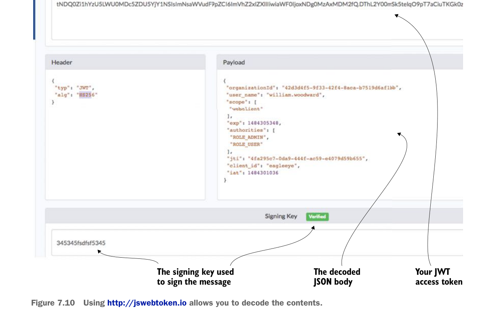

Using http://jswebtoken.io allows you to decode the contents.
7.4.2 Consuming JavaScript Web Tokens in your microservices
You now have your OAuth2 authentication service creating JWT tokens. The next step is to configure your licensing and organization services to use JWT. This is a trivial exercise that requires you to do two things:
- Add the
spring-security-jwtdependency to both the licensing service and the organization service’spom.xmlfile. (See the beginning of section 7.4.1, “Modifying the authentication service to issue JavaScript Web Tokens,” for the exact Maven dependency that needs to be added.) - Set up a
JWTTokenStoreConfigclass in both the licensing and organization services. This class is almost the exact same class used the authentication service (see listing 7.8). I’m not going to go over the same material again, but you can